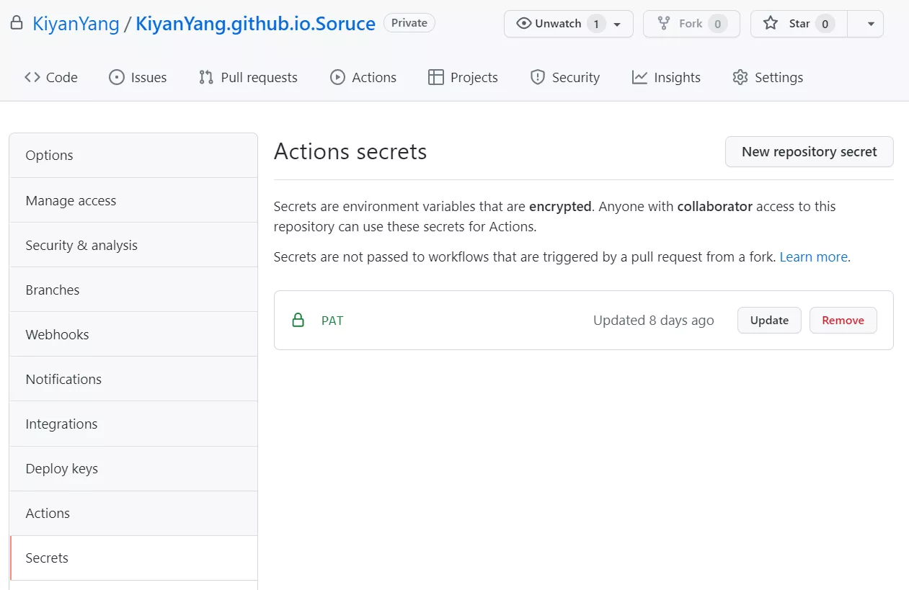

本文章通过使用 GitHub Actions 自动将博客源文件部署到 GitHub Pages。此外还可以在 Actions 中主动调用 Cloudflare Pages 部署挂钩，来避免一些不必要的部署。
前置条件
- GitHub 账号
- Cloudflare 账号
- Hexo 博客源文件
创建 GitHub Pages
这里简要描述一下步骤：
- 新建仓库
<user>.github.io，如果用户名包含大写字母，则必须改为小写字母。 - 选择仓库可见性为
public。 - 选择 Initialize this repository with a README（使用自述文件初始化此仓库）。
- 单击 Create repository（创建仓库）。
详细步骤可以查看 GitHub 文档“创建 GitHub Pages 站点”。
创建博客源代码仓库
有两种方式：
- 在
<user>.gitbub.io仓库（即上面创建的 GitHub Pages 站点仓库），新建分支source，然后将博客源文件上传至此分支。 - 新建仓库（此仓库的可见性可以设为
private），名称任意，比如<user>.gitbub.io.source，然后将博客源文件上传至此分支。
我选择了第二种方式（因为源仓库可以设为 private），后续代码也依据第二种方式，不过可以很容易修改得到第一种方式的代码。
编写 GitHub Actions
这里仅简单讲述一下相关的内容，更多关于 GitHub Actions 的内容请查看“官方文档”等。
在 Hexo 源文件的根目录，新建 .github/workflows/<fileName>.yml 文件，文件名任意，比如 deploy-pages。
|
|
在“🚀 Deploy”步骤中，我们使用 Marketplace Actions 中的“Deploy to GitHub Pages”来部署到 GitHub Pages。其中需要 Personal access token，下面是获取步骤。
在“Personal access tokens”页面点击右上角的 Generate new token 来生成一个新的 token，在生成页面的 Select scopes 中选择 workflow。注意要将生成的 token 保存好，因为只会在生成时显示一次，之后将无法查看。
在博客源文件仓库的设置中打开 Secrets 页面。

点击右上角 new repository secret 按钮来新建环境变量。
- 变量的名称为
PAT（也可以为其他名称，但是要和“🚀 Deploy”步骤中的token的值内变量名称保持一致）。 - 变量的内容为上面生成的“Personal access tokens”。
至此使用 GitHub Actions 自动将博客源文件部署到 GitHub Pages 就完成了，可以将自己将源文件上传查看效果。
部署 Cloudflare Pages
点击 Cloudflare Pages，转到 Pages（页面）> Create a project（创建项目）。
- 选择 GitHub 上你的博客源文件仓库。
- 配置和部署
- Project name（项目名称）：任意，此名称即为 Cloudflare Pages 的前缀，比如我的是 kiyanyang。
- Production branch（生产分支）：一般为
main或master，也就是你博客源文件所处的分支。 - Framework perset（框架预设）：选择
None。 - Build command（构建命令）：
npm run build或yarn build按需选择一个。 - Build output directory（构建输出目录）：
public。
- 点击部署进行第一次部署。
部署完成后打开网站查看效果。
使用部署挂钩
在 Cloudflare Pages 项目的“设置 > 构建与部署 > 自动 git 部署”可以看到，每当发生新的提交都会触发自动部署（无论博客源仓库的哪一分支），而 Cloudflare 每月只提供了 500 次免费部署，为了尽可能合理使用部署，我们可以关掉自动部署，开启部署挂钩，并使用 GitHub Actions 来请求部署。
-
在“设置 > 构建与部署”
- 自动 git 部署：点击“暂停部署”，来关闭自动部署。
- 部署挂钩：点击“添加部署挂钩”，挂钩名称任意。
-
在上面的 GitHub Actions 中新增步骤：
注意将链接替换为自己的挂钩链接，或者和上面 token 一样使用环境变量。
YAML1 2 3- name: 🚀 Deploy to Cloudflare Pages run: | curl -X POST "https://api.cloudflare.com/..."
这样的话，当 GitHub Pages 执行部署时，也会执行 Cloudflare Pages 的部署，不仅保证了站点内容的统一，也减少了一些不必要的构建。
最终的 GitHub Actions 参考如下：
|
|